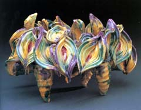
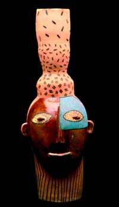
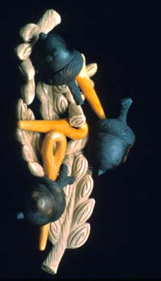

| The Lowe Features A Ceramic
Continuum: Fifty Years Of The Archie Bray Influence
Press Release
Coral Gables, FL – A Ceramic Continuum: Fifty Years of the
Archie Bray Influence will be on exhibition at the Lowe
Art Museum, University of Miami, from September 20 through
November 9, 2003. Also on view is Connected, a site-specific installation
by former Archie Bray fellow, Rebecca Hutchinson.
A
Ceramic Continuum features 85 ceramic works drawn from the permanent
collection of more than 800 works of the Archie Bray Foundation
for Ceramic Arts, and celebrates the Foundation’s 50th anniversary
in 2001. The Archie Bray
Foundation, located in Helena, Montana is a public non-profit
educational institution dedicated to the enrichment of contemporary
ceramic arts. The primary mission of the Foundation is its arts
residency program, which allows students and professionals to create
in private studios while contributing to one another's development
through the sharing of ideas and techniques.
Situated on the grounds of a former brick manufacturing plant owned
by the late Archie Bray, the Foundation has attracted clay artists
world-wide who have flourished in an atmosphere that encourages
experimentation and growth. The Foundation's alumni now number over
300 artists. They include studio potters, faculty who guide ceramic
art programs at distinguished colleges and universities, and artists
whose work are exhibited and collected by museums nationwide.
This
residency program has been the breeding grounds for many emerging
artists who have gone on to establish international careers in the
field of contemporary ceramic art. These include John and Andrea
Gill, Wayne Higby, Clary Illian, Warren McKenzie, Richard Notkin,
and Akio Takamori. All have made important contributions in the
field and had considerable influence in contemporary ceramics.
The ceramics in the exhibition include utilitarian pottery, sculptural
vessels, and large-scale architectural works by past resident artists,
as well as historical pieces and works from visiting artists, including
the pottery featured in this exhibition by world-renowned craftsmen
Bernard Leach from England and Shoji
Hamada from Japan. The selection also includes significant work
from all of the past resident directors of the Foundation: Rudy
Autio, David Cornell, Ken Ferguson,
Carol Roorbach, David Shaner, Kurt
Weiser, Peter Voulkos,
as well as work from Josh DeWeese, the current resident director.
The enduring visual legacy is unparalleled in today's world of art.
The exhibition is organized by the Holter
Museum of Art, Helena, Montana and is part of a 16 city,
four-year national tour, developed by Smith Kramer Fine Art Services.
To
complement A Ceramic Continuum: Fifty Years of the Archie Bray Influence,
the Lowe has commissioned a site-specific installation by Rebecca
Hutchinson. The former Archie Bray fellow will transform
the Lowe’s Friends of Art Gallery with one of her signature
works which makes use of organic materials and addresses interest
in the totality of ecosystem function and diverse components within
ecosystems that provide collaborative, parasitic, and symbiotic
relationships.
Hutchinson’s installations are comprised of multiple site
forms – components are either hand built, press molded, or
woven. All woven components use site-collected fibrous materials
combined with clay and are woven on traditional warp structures
that provide diversity in construction, yet guide the directional
flow of the piece. Large scale and site specific works are always
multi-dimensional. Hutchinson works within the ceramics tradition
of vessel and material, but also moves into issues of collaboration,
presentation, time, and environmental concerns. Each unique installation
concerns multiple forms and their interaction to one another in
terms of placement and space.
Lowe Art Museum exhibitions and programs are sponsored
in part by the State of Florida, Division of Cultural Affairs and
the Florida Arts Council; the Institute for Museum and Library Services;
the Miami-Dade County Cultural Affairs Council and Board of County
Commissioners; and the members of the Lowe Art Museum.
The University of Miami is the largest private
research institution in the southeastern United States. The University’s
mission is to provide quality education, attract and retain outstanding
students, support the faculty and their research, and build an endowment
for University initiatives.
More Articles
|